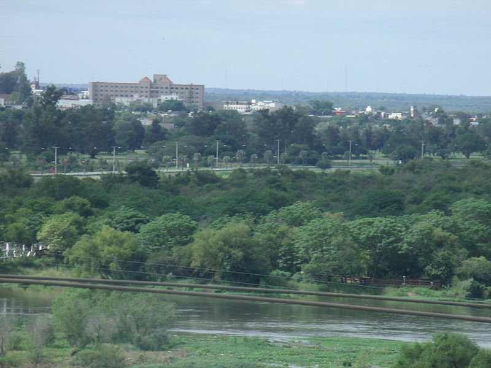

Termas de Río Hondo
Termas de Río Hondo es una ciudad del norte de Argentina, en la provincia de Santiago del Estero. Es cabecera del departamento Río Hondo, a orillas del río Dulce. La ciudad es el principal centro termal del país, ya que la misma se encuentra sobre una gran terma mineralizada que cubre 12 km a la redonda. Las aguas se indican especialmente como tónicas así como para la presión sanguínea y el reumatismo. Cuenta con una infraestructura hotelera de más de 170 establecimientos de distintas categorías, con 14.500 plazas, además de numerosos acampes.
